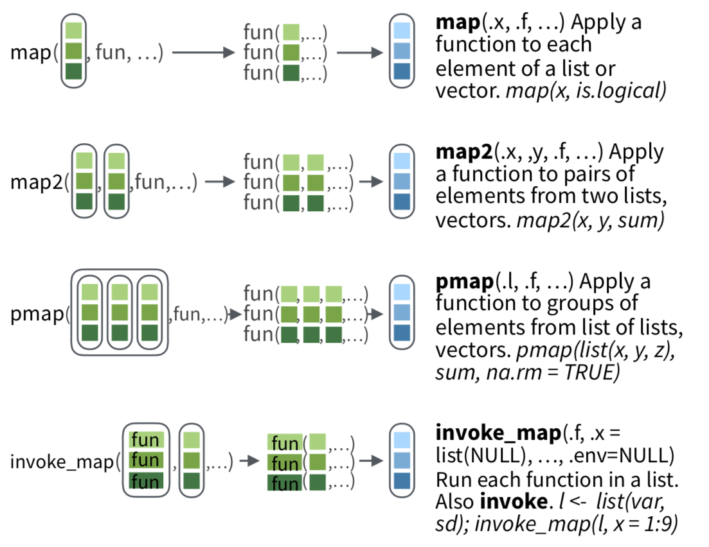

R lectures
06/06/2017
Repaso de la clase anterior
Funciones *map*() de purrr

Funciones *map*() de purrr
Con purrr, uno siempre elige explícitamente el tipo de salida.
Datos anidados: nest()
Ejemplo de workflow en el que usamos listas anidadas y manipulamos con purrr, conservando relaciones.
Tidyverse viene de Tidy data
Qué significa tener datos prolijos?
Para tener datos prolijos se deben cumplir los siguientes tres requisitos:
- Cada variable debe tener su propia columna.
- Cada observación debe tener su propia fila.
- Cada valor debe tener su propia celda.

Más sobre el abordaje tipo tidy data en H. Wickham "Tidy data", J Stat Softw (2014) , la vignette del paquete y por que no sus excepciones en el artículo Non-tidy data.
Paquete tidyr
gather()
Usamos gather(data, key, value) cuando tenemos una variable distribuida en varias
columnas.
Asignamos a key un nombre para la variable del encabezado y a value un nombre para la variable que corresponde a los valores de la tabla.
table4a
#> # A tibble: 3 × 3
#> country `1999` `2000`
#> 1 Afghanistan 745 2666
#> 2 Brazil 37737 80488
#> 3 China 212258 213766
table4a %>% gather(`1999`, `2000`, key = "year", value = "cases")
## # A tibble: 6 x 3
## country year cases
## 1 Afghanistan 1999 745
## 2 Brazil 1999 37737
## 3 China 1999 212258
## 4 Afghanistan 2000 2666
## 5 Brazil 2000 80488
## 6 China 2000 213766
gather()

spread()
Usamos spread(data, key, value) cuando tenemos una observación distribuida en varias filas.
Asociamos key a la variable que contiene valores de variable y value a la variable que contiene valores de distintas variables.
table2
#> # A tibble: 12 × 4
#> country year type count
#> 1 Afghanistan 1999 cases 745
#> 2 Afghanistan 1999 population 19987071
#> 3 Afghanistan 2000 cases 2666
#> 4 Afghanistan 2000 population 20595360
#> 5 Brazil 1999 cases 37737
#> 6 Brazil 1999 population 172006362
#> # ... with 6 more rows
table2 %>% spread(key = type, value = count)
#> # A tibble: 6 × 4
#> country year cases population
#> 1 Afghanistan 1999 745 19987071
#> 2 Afghanistan 2000 2666 20595360
#> 3 Brazil 1999 37737 172006362
#> 4 Brazil 2000 80488 174504898
#> 5 China 1999 212258 1272915272
#> 6 China 2000 213766 1280428583
spread()

separate()
Usamos separate(data, col, into, sep) cuando queremos dividir una variable en varias.
table3
#> # A tibble: 6 × 3
#> country year rate
#> 1 Afghanistan 1999 745/19987071
#> 2 Afghanistan 2000 2666/20595360
#> 3 Brazil 1999 37737/172006362
#> 4 Brazil 2000 80488/174504898
#> 5 China 1999 212258/1272915272
#> 6 China 2000 213766/1280428583
table3 %>% separate(rate, into = c("cases", "population"), sep = "/", convert = TRUE)
#> # A tibble: 6 × 4
#> country year cases population
#> 1 Afghanistan 1999 745 19987071
#> 2 Afghanistan 2000 2666 20595360
#> 3 Brazil 1999 37737 172006362
#> 4 Brazil 2000 80488 174504898
#> 5 China 1999 212258 1272915272
#> 6 China 2000 213766 1280428583
separate()

unite()
Usamos unite(data, col, sep) para juntar dos columnas.
table5 <- table3 %>% separate(year, into = c("century", "year"), sep = 2)
#> # A tibble: 6 × 4
#> country century year rate
#> 1 Afghanistan 19 99 745/19987071
#> 2 Afghanistan 20 00 2666/20595360
#> 3 Brazil 19 99 37737/172006362
#> 4 Brazil 20 00 80488/174504898
#> 5 China 19 99 212258/1272915272
#> 6 China 20 00 213766/1280428583
table5 %>% unite(new, century, year, sep = "")
#> # A tibble: 6 × 3
#> country new rate
#> 1 Afghanistan 1999 745/19987071
#> 2 Afghanistan 2000 2666/20595360
#> 3 Brazil 1999 37737/172006362
#> 4 Brazil 2000 80488/174504898
#> 5 China 1999 212258/1272915272
#> 6 China 2000 213766/1280428583
unite()

Aún más prolijidad: paquete broom
Pretnede extender la metodología 'prolija' a funciones clave como lm, glm, anova y varias otras, transformando sus salidas en data frames consistentes con el resto del tidyverse.
- Siempre saca data frames
- Nunca pone nombres en las filas (los guarda en variables que empiezan con punto)
- Consistencia al nombrar variables para combinar modelos sin trabajo extra. Para mayor información que variables se guardan, consultar el final de este link.
- Tres funciones principales:
tidy(),augment()ygather().
tidy()
Construye un data frame que resume los resultados de un modelo estadístico, por ejemplo, coeficientes y p-values para cada regresión, etc.
lmfit <- lm(mpg ~ wt, mtcars)
lmfit
##
## Call:
## lm(formula = mpg ~ wt, data = mtcars)
##
## Coefficients:
## (Intercept) wt
## 37.285 -5.344
summary(lmfit)
library(broom)
tidy(lmfit)
## term estimate std.error statistic p.value
## 1 (Intercept) 37.285126 1.877627 19.857575 8.241799e-19
## 2 wt -5.344472 0.559101 -9.559044 1.293959e-10
augment()
Agrega columnas a los datos originales modelados (descarta variables fuera del modelo). Esto incluye predicciones, residuos o asignaciones de clusters.
head(augment(lmfit))
## .rownames mpg wt .fitted .se.fit .resid .hat
## 1 Mazda RX4 21.0 2.620 23.28261 0.6335798 -2.2826106 0.04326896
## 2 Mazda RX4 Wag 21.0 2.875 21.91977 0.5714319 -0.9197704 0.03519677
## 3 Datsun 710 22.8 2.320 24.88595 0.7359177 -2.0859521 0.05837573
## 4 Hornet 4 Drive 21.4 3.215 20.10265 0.5384424 1.2973499 0.03125017
## 5 Hornet Sportabout 18.7 3.440 18.90014 0.5526562 -0.2001440 0.03292182
## 6 Valiant 18.1 3.460 18.79325 0.5552829 -0.6932545 0.03323551
## .sigma .cooksd .std.resid
## 1 3.067494 1.327407e-02 -0.76616765
## 2 3.093068 1.723963e-03 -0.30743051
## 3 3.072127 1.543937e-02 -0.70575249
## 4 3.088268 3.020558e-03 0.43275114
## 5 3.097722 7.599578e-05 -0.06681879
## 6 3.095184 9.210650e-04 -0.23148309
glance()
Construye un resumen conciso del modelo, de una línea (típicamente con R2, R2 adjustado, error standard, F1, etc.)
glance(lmfit)
## r.squared adj.r.squared sigma statistic p.value df logLik
## 1 0.7528328 0.7445939 3.045882 91.37533 1.293959e-10 2 -80.01471
## AIC BIC deviance df.residual
## 1 166.0294 170.4266 278.3219 30
Workflow científico

Modo interactivo, source() y R CMD BATCH
## En un editor de texto creamos el script z.R
pdf("xh.pdf") # configuramos un archivo de salido
hist(rnorm(100)) # generamos 100 números aleatorios de N(0,1) y hacemos un histograma
dev.off() # cerramos el archivo de salida
## En el terminal:
R CMD BATCH z.R
## En R:
source("z.R")
Acordarse que para imprimir en pantalla desde un script, tienen que usar print().
Workflow científico
- Trabajar con scripts permite mantener y sistematizar nuestro proceso científico
- el trabajo pasa a ser gradual, mejorando a cada vez
- Conviene modularizar nuestros procesos haciendo scripts de scripts.
- Nos da flexibilidad y claridad
- Permite separar 'físicamente' procesos computacionales diferentes
- Permite reciclar código
Ejemplo: hago un script, my_great_data_analysis.R, que contiene:
source("0-input-data.R")
source("1-clean-data.R")
source("2-parse-data.R")
source("3-graph-data.R")
R project y CRAN en ciencia
The R Project for Statistical Computing
The Comprehensive R Archive Network
- El proyecto R mantiene el código, la documentación, y la comunidad, entre otras cosas
- CRAN: red de servers web y ftp mundial que guarda versiones y documentación actualizadas e idénticas de R. De acá se baja R y los paquetes aceptados oficialmente
- CRAN tiene Task Views, páginas web que nuclean paquetes por temas. Bioconductor también. Ejemplos:
Práctica tidyr
Trabajamos con los datos who del paquete tidyr. Son datos de tuberculosis (TB) de la organización mundial de la salud. Pueden leer el help de los datos para tener más información. El ejercicio es llevar estos datos a formato 'prolijo' o tidy. Para ello deben deshacerse de datos redundantes, y utlizar las funciones de tidyr hasta quedarse con columnas correspondientes a país, año, tipo (de TB), sexo, edad y casos. Tendrán que usar lo aprendido respecto de NA's y respecto de manipulación de strings (paquete readr).
head(who_final)
# A tibble: 76,046 x 6
país año tipo sex edad casos
1 Afghanistan 1997 sp m 014 0
2 Afghanistan 1998 sp m 014 30
3 Afghanistan 1999 sp m 014 8
4 Afghanistan 2000 sp m 014 52
5 Afghanistan 2001 sp m 014 129
6 Afghanistan 2002 sp m 014 90